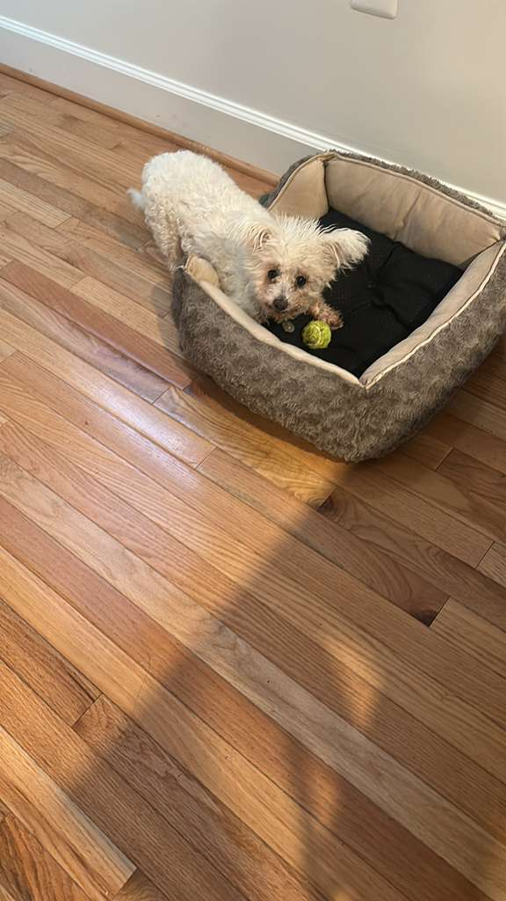
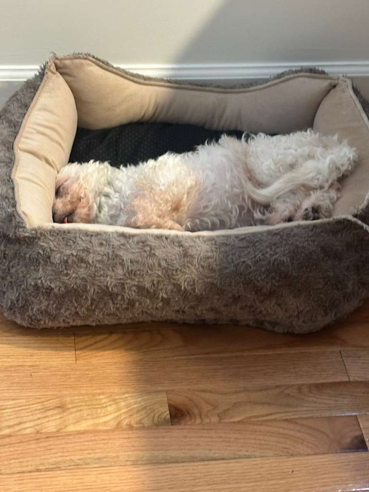
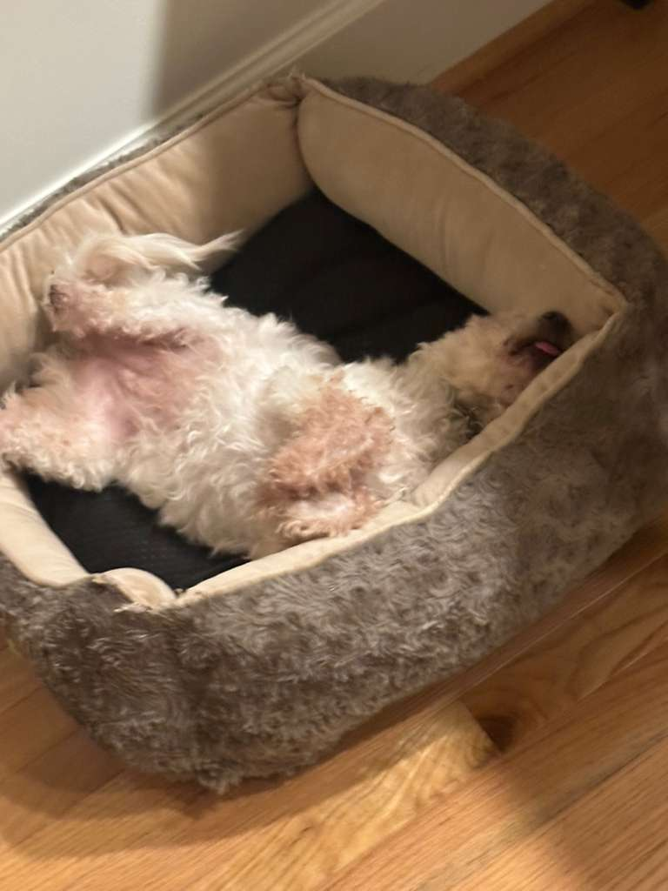
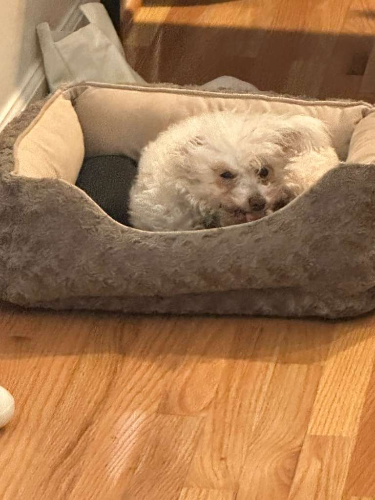

Frida Carbo
Joined the lab: 2026
Frida joined the lab in 2026 and has since established herself as an indispensable member of the research team. Her work spans several active areas of investigation, though she maintains a strong preference for empirical methods over theoretical contributions.
Contact: Frida does not maintain an email address. In-person inquiries may be submitted during dedicated office hours (approximately 3–5pm, subject to nap scheduling). Treats are a prerequisite for extended consultation.
Research Interests
Olfactory Inference as Bayesian Updating
Frida maintains a strong prior on the location of food, updated continuously through olfactory likelihood estimation. Her posterior is remarkably well-calibrated, though she exhibits a known and persistent bias toward the kitchen. Current work explores whether sniffing frequency correlates with posterior uncertainty.
Optimal Fetch Trajectories and the Exploration–Exploitation Tradeoff
When presented with a tennis ball, Frida demonstrates a greedy retrieval policy with near-zero latency. However, she has yet to solve the return subproblem, suggesting a fundamental misalignment between her reward function and the stated objective of the game. This is an open area of research.
Sleep Position Generalization in High-Dimensional Configuration Spaces
Frida has demonstrated that biological neural networks are capable of finding novel equilibrium states that no reasonable researcher would predict from first principles. Her work in this area is prolific and ongoing. (See Figures 1–3 below.)
Emergent Misalignment in Recall Commands
Frida responds to her name approximately 60% of the time under controlled conditions, dropping to an estimated 15% in the presence of other dogs or unattended food. Whether this constitutes misalignment or a rational response to a misspecified reward signal remains under debate.
Figures 1–3: Sleep Position Generalization


